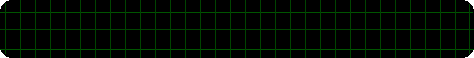
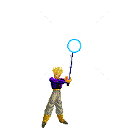
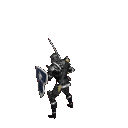

Mehul Nair Homepage
  
About Mehul Nair
Mehul Nair is simply put: a visionary. Boasting an IQ of 64, many of his contemporiaries have described him as "Obtuse", "Asernine", and "Simply Phronemophobic. World reknowned for his Toaster Strudel consumption prowess and his endless motivation for the procurement and ingestion of cheesecake. Mehul Nair consistently ranks amongst the top experts in these fields. The work he produces is greatly inspired by other top experts in the consumption field such as consumption legend Sushanth Satish Kumar. Outside of his primary field of expertise, Mehul also dabbles in ocassional FIFA grinds and sleep deprivation. Mehul lives with his wife and two kids who definetly exist in his multimillion dollar mansion located on the mountain next to that one beach (It's crazy insane, trust me I've been there). In his free time he likes to taste various metals and tries to paint his eyes green. Oh and he also does Nuclear Research I guess "